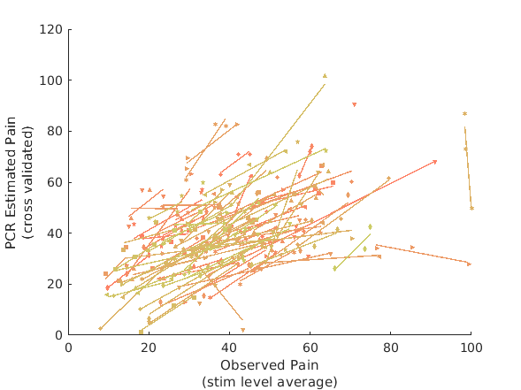
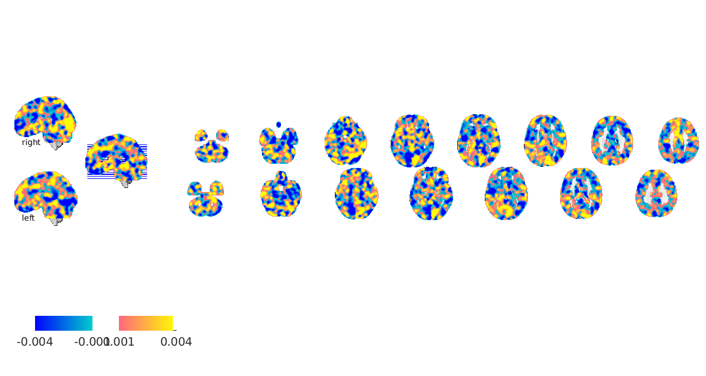
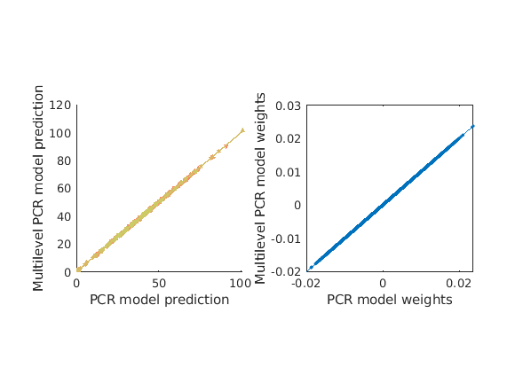
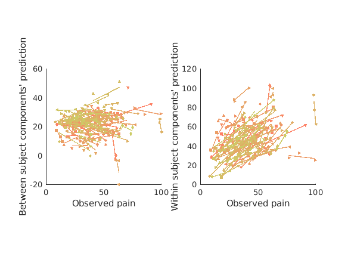
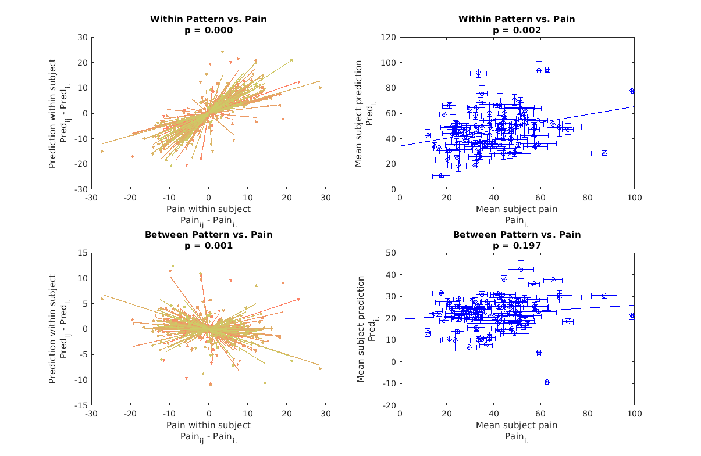
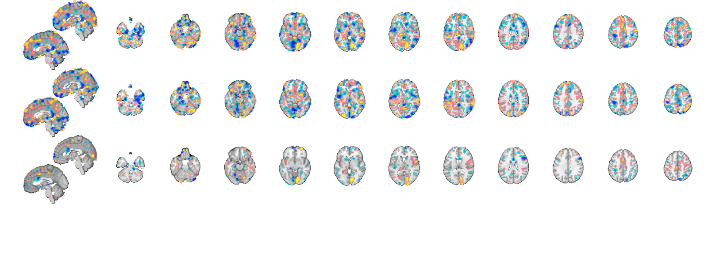
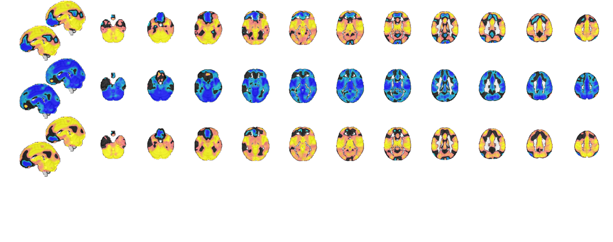
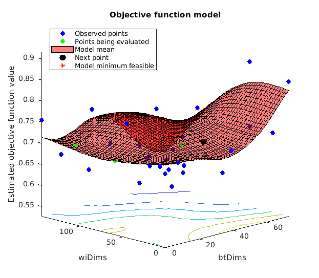
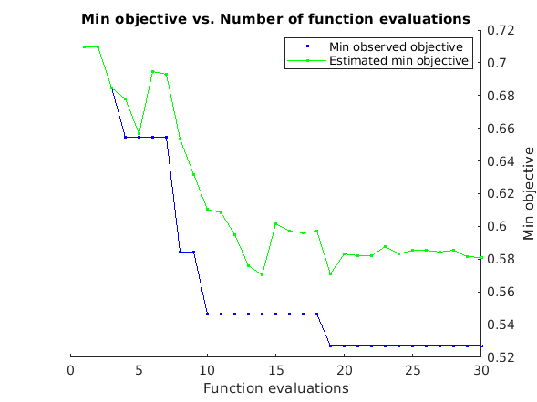

Multivariate MVPA prediction with between and within component interpretation
This tutorial addresses how to use the canlab multilevel PCR method for multivariate analysis.
Multilevel PCR is similar to PCR except it computes covariance of a within subject component and a between subject component separately. Eigenvectors are extracted and scores on these eigenvectors are computed for each subject, same as in PCA, only now some of the scores reflect exclusively between subject variance, while others reflect the within subject variance (which can also vary between subj if task conditions or subjects aren't especially well matched). We then perform PCR style prediction model fitting using component scores as inputs to a regression equation. The result is a joint MVPA model which incorporates both elements, but we can also subdivide them into between or within subject fractions, something we can't do easily with PCA.
This gives the model greater transparency than traditional PCR when data has a block structure. Although multilevel PCR takes into account the block structure of data all parameter estimates are fixed effect estimates. Generalizing to a mixed effects model is possible, but exceeds the scope of our objectives here.
Multilevel PCR has tw hyperparameters: the dimensions to retain at the within level and the dimensions to retain at the between level. Adjusting these parameters is a form of regularization, and the fewer you use the more regularized your model is. PCR has shown good success in a number of instances using all components. This is fortunate because using all components gives us the least biased MVPA parameter estimates, and when using all components PCR and multilevel PCR yeild convergent results, meaning that multilevel PCR can be used to better understand unregularized PCR models. Regularized MVPA is covered in appendix A but is otherwise not a part of this tutorial.
We will demonstrate the use of Multilevel PCR for interpreting PCR maps use data from an experiment designed to study race differences in pain report. There are published effects that distinguish different racial groups (hispanic, white and black), and the experimental design also involves variation in stimulus intensity within individuals (three stimulus levels, 47, 48 and 49C) so we have good reason to suspect both within and between subject differences might be captured by an MVPA model. The actual dataset we're working with are "first level" statistical maps, estimated at the level of single stimulus events. These quantify the mean BOLD response during that stimulus event relative to the scan baseline.
Traditional GLM analysis is not performed at the single event level, instead multiple events are grouped in some sensible way to yeild a single map for that event, for instance all stimuli of a particular modality or all stimuli of a particular level. We begin by averaging our single trial maps within stimulus level, which means we are working with statistical maps very similar to those produced by a subject-level GLM analysis that models the BOLD response for each stimulus level separately.
This dataset is not publically available as of the time of this writing, but is available in the canlab single trials repository for members of the lab to work with. If following this tutorial without access to these datasets you can try using the public bmrk3 dataset available through canlabCore by calling bmrk3 = load_image_set('bmrk3'). subject_id is then in bmrk3.additional_info.subject_id instead of in the metadata_table fields used here.
References:
For a description of the multiracial dataset and experimental details, Losin E, et a. (2019). "Neural and sociocultural mediators of ethnic differences in pain". Nature Human Behavior.
For details on source reconstructoin from MVPA models, Haufe, et al. (2014) "On the interpretatoin of weight vectors of linear models in multivariate neuroimaging." Neuroimage.
For Bayesian hyperparameter optimization, Snoek, et al. (2012) "Practical bayesian optimization of machine learning algorithms". Advances in Neural Information Processing Systems
Contents
- Overview
- Setup environment
- load multiracial dataset
- prep metadata for cross validation
- Null prediction
- Fit MVPA model using PCR
- Fit MVPA model using multilevel PCR
- Sensitivity and specificity of between and within subject patterns
- Illustrate within and between subject predictive patterns
- Recovering source signals
- Conlcusions
- Appendix A: optimizing multilevel PCR models using Gaussian processes
- APPENDIX B: loss function for mlPCR optimization
- APPENDIX C: bootstrapping functions
Overview
We begin by fitting an unregularized PCR and multilevel PCR model (i.e. use all PCA dimensions) to demonstrate their equivalence.
Second we will show how multilevel PCR allows us to obtain patterns which predict between and within subjct pain variance. This comes in two parts. First we will examine sensitivity and specificity for the main components of interest. It will be shown that within subject patterns are sensitive but not specific, while between subject patterns are neither sensitive nor specific. Then we will illustrate the predictive models at each level.
Third we'll go over how to interpret these predictive patterns using source reconstruction, and demonstrate that although the between components aren't significantly predictive on their own, they do correspond to established sources of between subject pain variance.
Collectively the analysis outlined in this tutorial will show that even in a dataset designed to capture between subject differences in pain, PCR based MVPA models will predominantly reflect effects related to within subject variation in the bold response, i.e. task driven effects, and that even though there is a neural correlate for pain in the brain which is independent of the task, the signal is too weak to be used to generate a stand alone predictive model.
Setup environment
close all; clear all addpath(genpath('/projects/bope9760/spm12')); % canlabCore dependency addpath(genpath('/projects/bope9760/software/canlab/CanlabCore')); % We don't use any functions from canlab_single_trials, except for data % importing functions. addpath(genpath('/projects/bope9760/software/canlab/canlab_single_trials/')) % we use a common data repository to share this resource across HPC users, % but if not found it will be automatically downloaded by load_image_set(). % Those who do not have access to the canlab_single_trials repository % should substitute bmrk3 for bmrk5pain in the following code. and % bmrk3.additional_info.subject_id where we used % bmrk5pain.metadata_table.subject_id. % load_image_set('bmrk3') will work with just canlabCore in your path, and % the rest of this script should be compatible with it too. addpath(genpath('/work/ics/data/projects/wagerlab/labdata/projects/canlab_single_trials_for_git_repo/'))
load multiracial dataset
bmrk5pain = load_image_set('bmrk5pain'); % shouldn't be necessary if I'd done a better job cleaning this data for % the single trials repository, but I left the job unfinished in this % respect and data still has some nan voxels lingering as of this writing bmrk5pain.dat(isnan(bmrk5pain.dat)) = 0; % let's get rid of bad trials bmrk5pain = bmrk5pain.get_wh_image(bmrk5pain.metadata_table.vif < 2.5); bmrk5pain = bmrk5pain.get_wh_image(~isnan(bmrk5pain.Y)); % convert subjct_id to numeric [~,~,subject_id] = unique(bmrk5pain.metadata_table.subject_id,'stable'); uniq_subject_id = unique(subject_id); n_subj = length(uniq_subject_id); % Lets average our data within stimulus level to speed up this tutorial by % fitting models to smaller datasets. In principle there's no reason this % is necessary, and inflates our impression of how well our models do % (because we're throwing out all between trial variance at the % within-stimulus level). It also aligns our data matrix with stimulus % intensity which biases PCA towards picking up stimulus related variance % components, but that's OK for this dataset. There shouldn't be many other % meaningful sources of variance within subject, but it will result in % somewhat cleaner looking maps than if we had used the full dataset. newdat = {}; for i = 1:n_subj this_idx = find(uniq_subject_id(i) == subject_id); this_dat = bmrk5pain.get_wh_image(this_idx); T = this_dat.metadata_table.T; lvls = unique(T); n_lvls = length(lvls); for j = 1:n_lvls newdat{end+1} = mean(this_dat.get_wh_image(lvls(j) == T)); end end newdat = cat(newdat{:}); varLost = 1 - sum((newdat.Y - mean(newdat.Y)).^2) / sum((bmrk5pain.Y - mean(bmrk5pain.Y)).^2); fprintf('Discarding %0.3f%% of outcome variance\n', varLost) bmrk5pain = newdat; clear newdat; %mask gray matter gray_mask = fmri_mask_image('gray_matter_mask.img'); bmrk5pain = bmrk5pain.apply_mask(gray_mask); % zscore images if desired. We don't do it, but I mention this here to % emphasize that any data averaging should be performed BEFORE image % rescaling. This makes for easier interpretation since averaging raw % images is equivalent to running a GLM with your single trial event % vectors averaged in the same way. Averaging zscored images is a less % transparent operation.
Loading: /work/ics/data/projects/wagerlab/labdata/projects/canlab_single_trials_for_git_repo/bmrk5pain_data.mat
Source: bmrk5pain data from wagerlab/labdata/projects/bmrk5_painsound/. Img data from the first_level_all_trs_single_trials/ subjfolder. Metadata from the single_trial_output_scnlab_july2016/ subfolder
____________________________________________________________________________________________________________________________________________
Losin, et al. (2019) Nature Human Behavior
____________________________________________________________________________________________________________________________________________
Summary of dataset
______________________________________________________
Images: 3232 Nonempty: 3232 Complete: 3232
Voxels: 237066 Nonempty: 237066 Complete: 225405
Unique data values: 143236324
Min: -128.846 Max: 173.216 Mean: 0.352 Std: 1.424
Percentiles Values
___________ ________
0.1 -8.5114
0.5 -3.6723
1 -2.5995
5 -1.0999
25 -0.18898
50 0.21574
75 0.73814
95 2.2535
99 4.8069
99.5 6.3801
99.9 11.625
Pain ratings in image_obj.Y
Additional metadata in image_obj.additional_info struct
Loaded images:
Warning: Connot determine orientation of metadata_table > . Assuming rows are
trials.\n
Warning: Connot determine orientation of metadata_table > . Assuming rows are
trials.\n
Warning: Connot determine orientation of metadata_table > . Assuming rows are
trials.\n
Discarding 0.927% of outcome variance
Direct calls to spm_defauts are deprecated.
Please use spm('Defaults',modality) or spm_get_defaults instead.
prep metadata for cross validation
I'm not sure fmri_data/predict respects subject membership, it may, but I know it will if I tell it what the fold membership is myself. We chose 5-fold cross validation because it's fast.
[~,~,subject_id] = unique(bmrk5pain.metadata_table.subject_id,'stable'); uniq_subject_id = unique(subject_id); n_subj = length(uniq_subject_id); kfolds = 5; cv = cvpartition2(ones(size(bmrk5pain.dat,2),1), 'KFOLD', kfolds, 'Stratify', subject_id); [I,J] = find([cv.test(1),cv.test(2), cv.test(3), cv.test(4), cv.test(5)]); fold_labels = sortrows([I,J]); fold_labels = fold_labels(:,2);
Null prediction
The first thing we're going to do is establish a reference point for any of our model performances. In traditional regression analysis a null (intercept only) model shows a correlation of 0 not negative correlations. However in a cross validated context the null intercept only model shows a negative correlation. This is because training set means are negatively biased estimates of the test set means, and the bias is especially severe for small datasets. Normally you don't need to do this, but it's instructive, so let's see what the null model looks like.
null_pred = zeros(length(bmrk5pain.Y), 1); for i = 1:length(unique(fold_labels)) training_fold = (fold_labels ~= i); % Binary vector of length(brmk5pain.Y) indicating membership in this training fold test_fold = (fold_labels == i); null_pred(test_fold) = mean(bmrk5pain.Y(training_fold)); % intercept only model end fprintf('Null model r=%0.3f\n', corr(null_pred, bmrk5pain.Y));
Null model r=-0.105
Fit MVPA model using PCR
Next we fit a PCR model using all PCA dimensions to demonstrate convergence beween PCR and multilevel PCR models. We do this by ommitting the 'numcomponents' argument, so that it selects the default setting of all components.
[pcr_cverr, pcr_stats, pcr_optout] = bmrk5pain.predict('algorithm_name','cv_pcr',... 'nfolds',fold_labels); fprintf('PCR r = %0.3f\n', corr(pcr_stats.yfit, bmrk5pain.Y)); figure line_plot_multisubject(bmrk5pain.Y, pcr_stats.yfit, 'subjid', subject_id); xlabel({'Observed Pain','(stim level average)'}); ylabel({'PCR Estimated Pain','(cross validated)'}) pcr_model = bmrk5pain.get_wh_image(1); pcr_model.dat = pcr_optout{1}(:); figure; pcr_model.montage;
Cross-validated prediction with algorithm cv_pcr, 5 folds
Completed fit for all data in: 0 hours 0 min 5 secs
Fold 1/5 done in: 0 hours 0 min 4 sec
Fold 2/5 done in: 0 hours 0 min 4 sec
Fold 3/5 done in: 0 hours 0 min 4 sec
Fold 4/5 done in: 0 hours 0 min 4 sec
Fold 5/5 done in: 0 hours 0 min 4 sec
Total Elapsed Time = 0 hours 0 min 26 sec
PCR r = 0.462
Warnings:
____________________________________________________________________________________________________________________________________________
X: input cells with low varability:
6 12 37 50 62
Y: input cells with low varability:
2 23 41 74 86
Some input cells have too few data points for fit
11
Excluded some subjects from individual fits:
11
____________________________________________________________________________________________________________________________________________
____________________________________________________________________________________________________________________________________________
Input data:
X scaling: No centering or z-scoring
Y scaling: No centering or z-scoring
Transformations:
No data transformations before plot
Correlations:
r = 0.46 across all observations, based on untransformed input data
Stats on slopes after transformation, subject is random effect:
Mean b = 0.66, t( 91) = 2.67, p = 0.009048, num. missing: 1
Average within-person r = 0.79 +- 0.38 (std)
Between-person r (across subject means) = 0.40, p = 0.000080
____________________________________________________________________________________________________________________________________________
Setting up fmridisplay objects
Warning: Connot determine orientation of mask > . Assuming rows are trials.\n
Warning: Connot determine orientation of Y > . Assuming rows are trials.\n
Warning: Connot determine orientation of covariates > . Assuming rows are
trials.\n
Warning: Connot determine orientation of covariate_names > . Assuming rows are
trials.\n
Warning: Connot determine orientation of removed_images > . Assuming rows are
trials.\n
Warning: Connot determine orientation of files_exist > . Assuming rows are
trials.\n
Grouping contiguous voxels: 3 regions
sagittal montage: 4275 voxels displayed, 211081 not displayed on these slices
sagittal montage: 4212 voxels displayed, 211144 not displayed on these slices
sagittal montage: 3965 voxels displayed, 211391 not displayed on these slices
axial montage: 31196 voxels displayed, 184160 not displayed on these slices
axial montage: 33349 voxels displayed, 182007 not displayed on these slices
  Fit MVPA model using multilevel PCR
Multilevel PCR when used without any dimensionality reduction gives the same solution as PCR (if PCR is also without dimensionality reduction). We do this the same way by ommitting the 'numcomponents' argument, but we could also use 'numcomponents', [Inf, Inf] and the dimensions would be set to their maximum automatically (if you pick an arbitrary large number it does the same thing but throws a warning to notify you that it's using a different dimensionality than you specified). The results here shouldn't differ from the above, but by using multilevel PCR we will also get within and between model components.
Note the specification of a subjIDs parameter. cv_mlpcr requires this.
Note the performance penalty relative to PCR. It's not substantial but it's not negligible eithr.
% overall model prediction [mlpcr_cverr, mlpcr_stats, mlpcr_optout] = bmrk5pain.predict('algorithm_name','cv_mlpcr',... 'nfolds',fold_labels,'subjIDs',subject_id); fprintf('multilevel PCR r = %0.3f\n',corr(mlpcr_stats.yfit, bmrk5pain.Y)); figure subplot(1,2,1) line_plot_multisubject(pcr_stats.yfit, mlpcr_stats.yfit, 'subjid', subject_id); xlabel({'PCR model prediction'}); ylabel('Multilevel PCR model prediction'); axis square subplot(1,2,2); plot(pcr_optout{1}(:),mlpcr_optout{1}(:),'.'); lsline; xlabel('PCR model weights'); ylabel('Multilevel PCR model weights'); axis square % let's now get the variance explained by just the between component or % just the within component. These functions call the same thing under the % hood, but simply perform cross validation using ONLY between or within % subject models. [mlpcr_bt_cverr, mlpcr_bt_stats] = bmrk5pain.predict('algorithm_name','cv_mlpcr_bt',... 'nfolds',fold_labels,'subjIDs',subject_id, 'verbose', 1, 'useparallel', 1); pred_bt = mlpcr_bt_stats.yfit; [mlpcr_wi_cverr, mlpcr_wi_stats] = bmrk5pain.predict('algorithm_name','cv_mlpcr_wi',... 'nfolds',fold_labels,'subjIDs',subject_id, 'verbose', 1, 'useparallel', 1); pred_wi = mlpcr_wi_stats.yfit; fprintf('Between subject PCR components r = %0.3f\n', corr(mlpcr_bt_stats.yfit, bmrk5pain.Y)); fprintf('Within subject PCR components r = %0.3f\n', corr(mlpcr_wi_stats.yfit, bmrk5pain.Y)); figure subplot(1,2,1) line_plot_multisubject(bmrk5pain.Y, pred_bt, 'subjid', subject_id); xlabel({'Observed pain'}); ylabel('Between subject components'' prediction'); axis square subplot(1,2,2) line_plot_multisubject(bmrk5pain.Y, pred_wi, 'subjid', subject_id); xlabel({'Observed pain'}); ylabel('Within subject components'' prediction'); axis square
Cross-validated prediction with algorithm cv_mlpcr, 5 folds
Completed fit for all data in: 0 hours 0 min 7 secs
Fold 1/5 done in: 0 hours 0 min 5 sec
Fold 2/5 done in: 0 hours 0 min 5 sec
Fold 3/5 done in: 0 hours 0 min 5 sec
Fold 4/5 done in: 0 hours 0 min 5 sec
Fold 5/5 done in: 0 hours 0 min 5 sec
Total Elapsed Time = 0 hours 0 min 33 sec
multilevel PCR r = 0.462
Warnings:
____________________________________________________________________________________________________________________________________________
X: input cells with low varability:
2 23 41 74 86
Y: input cells with low varability:
2 23 41 74 86
Some input cells have too few data points for fit
11
Excluded some subjects from individual fits:
11
____________________________________________________________________________________________________________________________________________
____________________________________________________________________________________________________________________________________________
Input data:
X scaling: No centering or z-scoring
Y scaling: No centering or z-scoring
Transformations:
No data transformations before plot
Correlations:
r = 1.00 across all observations, based on untransformed input data
Stats on slopes after transformation, subject is random effect:
Mean b = 1.00, t( 91) = 179202723143563.91, p = 0.000000, num. missing: 1
Average within-person r = 1.00 +- 0.00 (std)
Between-person r (across subject means) = 1.00, p = NaN
____________________________________________________________________________________________________________________________________________
Cross-validated prediction with algorithm cv_mlpcr_bt, 5 folds
Completed fit for all data in: 0 hours 0 min 7 secs
Fold 1/5 done in: 0 hours 0 min 6 sec
Fold 2/5 done in: 0 hours 0 min 5 sec
Fold 3/5 done in: 0 hours 0 min 5 sec
Fold 4/5 done in: 0 hours 0 min 5 sec
Fold 5/5 done in: 0 hours 0 min 5 sec
Total Elapsed Time = 0 hours 0 min 34 sec
Cross-validated prediction with algorithm cv_mlpcr_wi, 5 folds
Completed fit for all data in: 0 hours 0 min 7 secs
Fold 1/5 done in: 0 hours 0 min 5 sec
Fold 2/5 done in: 0 hours 0 min 5 sec
Fold 3/5 done in: 0 hours 0 min 5 sec
Fold 4/5 done in: 0 hours 0 min 5 sec
Fold 5/5 done in: 0 hours 0 min 5 sec
Total Elapsed Time = 0 hours 0 min 33 sec
Between subject PCR components r = 0.058
Within subject PCR components r = 0.405
Warnings:
____________________________________________________________________________________________________________________________________________
X: input cells with low varability:
6 12 37 50 62
Y: input cells with low varability:
19 56 57 59 86
Some input cells have too few data points for fit
11
Excluded some subjects from individual fits:
11
____________________________________________________________________________________________________________________________________________
____________________________________________________________________________________________________________________________________________
Input data:
X scaling: No centering or z-scoring
Y scaling: No centering or z-scoring
Transformations:
No data transformations before plot
Correlations:
r = 0.06 across all observations, based on untransformed input data
Stats on slopes after transformation, subject is random effect:
Mean b = -0.27, t( 91) = -2.77, p = 0.006792, num. missing: 1
Average within-person r = -0.26 +- 0.70 (std)
Between-person r (across subject means) = 0.13, p = 0.222242
____________________________________________________________________________________________________________________________________________
Warnings:
____________________________________________________________________________________________________________________________________________
X: input cells with low varability:
6 12 37 50 62
Y: input cells with low varability:
9 41 74 85 86
Some input cells have too few data points for fit
11
Excluded some subjects from individual fits:
11
____________________________________________________________________________________________________________________________________________
____________________________________________________________________________________________________________________________________________
Input data:
X scaling: No centering or z-scoring
Y scaling: No centering or z-scoring
Transformations:
No data transformations before plot
Correlations:
r = 0.40 across all observations, based on untransformed input data
Stats on slopes after transformation, subject is random effect:
Mean b = 0.92, t( 91) = 4.33, p = 0.000038, num. missing: 1
Average within-person r = 0.85 +- 0.34 (std)
Between-person r (across subject means) = 0.30, p = 0.002985
____________________________________________________________________________________________________________________________________________
  Sensitivity and specificity of between and within subject patterns
above we've simply plotted the predictions on the within and between compoents in each case, but it's hard to see how well they satisfy their design objectives. In the training data the within components are selected such that IF they predict any between subject pain variance they do so using representations of pain which characterize within subject variance. Meanwhile the between subject components are designed to be invariant within subject and only predict between subject pain. To see if these objectives are satisfied we have to subdivide both observed pain and each pain prediction into within and between components, so let's do that and plot the results.
In the data presented below we have I subjects {1, 2, ..., I}, each with J stimulus levels each {1, 2, ..., J}. J may differ between subjects (but mostly doens't). Pain_i_j means pain rating from subject i on stimulus level j. Pain_i_. means pain rating from subject i averaged overall all J stimulus levels. The same notation is used for predictions.
We can see that within patterns do predict between subject pain differences. Within patterns most likely represent the effects of afferent input, because our within subject data varies in stimulus intensity, and averaging within stimulus intensity means that this dimension is likely a very salient one in our within data. However differences in afferent input may exist between subjects too due to differences in peripheral sensitivity or tissue thermal conductance (the stimulus intensities are the same across subjects).
Meanwhile between subject differences vary between subjects but do not predict within subject effects. The within subject effects are negatively predicted, which may seem a bit confusing, but this is actualy what's expected from a cross validated null model (see above section on null model). Thus the within subject variance predicted by the between subject pattern is most likely noise. If we look at the mean between pattern predictions for each subject we see that these do not predict the mean pain report between subjects either. To make sure this effect isn't simply washed out by the negative bias of cross validation, all our p-values below are computed with respect to the null prediction, which is not zero. This is shown by an interaction effect coding for the different correlations with pain shown by null and between subject predictions. Normally we would simply show that our prediction is significantly different from zero and avoid this added complexity while accepting a slightly more conservative pValue estimate, however, to convincingly show a null finding, we need this comparison.
Thus we have successfully broken down our MVPA pattern into a within and between component and shown that a significant portion of the between subject differences in pain rating are actually due to factors related to differences in ascending nociceptive input. This in and of itself is profound because it shows that between subject differences in pain ratings are reflective of something objective, contrary to classic psychophysics work which prefers to emphasize the objectivity of proportions over the objctivity of absolute intensity ratings (consider S.S. Stevens and Donald Price). We have not convincingly shown that the between subject components are meaningful but we will do so using source reconstruction in one of the next sections.
Standard Errors are illustrated on between effcts plots.
% let's get the within and between pain components using a centering matrix % to demean or average within subject. This is faster and easier than % implementing a for loop every time, because matlab has fast matrix math % and slow for loops. The use of centuring and averaging matricies is a % neat trick to convert multiple for loop invocations into a single % invocation and reusing the fruits of that labor many times over. cmat = []; % within subject centering matrix mumat = []; % within subject averaging matrix n = []; for i = 1:n_subj this_blk = uniq_subject_id(i); this_n = sum(this_blk == subject_id); n = [n(:); this_n*ones(this_n,1)]; cmat = blkdiag(cmat, eye(this_n) - 1/this_n); mumat = blkdiag(mumat, ones(this_n)*1/this_n); end [~,exemplar] = unique(subject_id); Y_wi = cmat*bmrk5pain.Y; Y_bt = mumat*bmrk5pain.Y; pred_bt_bt = mumat*pred_bt; pred_bt_wi = cmat*pred_bt; pred_wi_bt = mumat*pred_wi; pred_wi_wi = cmat*pred_wi; % let's also get the demenaed null data null_pred_bt = mumat*null_pred; null_pred_wi = cmat*null_pred; % compute standard standard errors on subject mean predictions and ratings v_pred_bt = (mumat*(pred_bt_wi.^2)./n).^0.5; v_pred_wi = (mumat*(pred_wi_wi.^2)./n).^0.5; v_Y_bt = (mumat*(Y_wi.^2)./n).^0.5; % get rid of redundant rows Y_bt = Y_bt(exemplar); v_Y_bt = v_Y_bt(exemplar); pred_bt_bt = pred_bt_bt(exemplar); v_pred_bt = v_pred_bt(exemplar); pred_wi_bt = pred_wi_bt(exemplar); v_pred_wi = v_pred_wi(exemplar); null_pred_bt = null_pred_bt(exemplar); % we'll use fitlm() to test interaction effects using OLS, which requires % our data to be organized in tables nn = length(Y_wi); t_wi = array2table([[Y_wi; Y_wi], [pred_wi_wi; null_pred_wi], [pred_bt_wi; null_pred_wi], [0.5*ones(nn,1); -0.5*ones(nn,1)]],... 'VariableNames',{'obs','pred_wi','pred_bt','mvpa'}); t_bt = array2table([[Y_bt; Y_bt], [pred_wi_bt; null_pred_bt], [pred_bt_bt; null_pred_bt], [0.5*ones(n_subj,1); -0.5*ones(n_subj,1)]],... 'VariableNames',{'obs','pred_wi','pred_bt','mvpa'}); figure subplot(2,2,1); m = fitlm(t_wi,'pred_wi ~ obs*mvpa'); p = m.Coefficients.pValue(4); line_plot_multisubject(Y_wi, pred_wi_wi,'subjid', subject_id); title({'Within Pattern vs. Pain',sprintf('p = %0.3f',p)}); ylabel({'Prediction within subject','Pred_i_j - Pred_i_.'}) xlabel({'Pain within subject','Pain_i_j - Pain_i_.'}) subplot(2,2,2); hold off; m = fitlm(t_bt,'pred_wi ~ obs*mvpa'); p = m.Coefficients.pValue(4); plot(Y_bt, pred_wi_bt,'b.'); lsline hold on; errorbar(Y_bt, pred_wi_bt, v_pred_wi, v_pred_wi, v_Y_bt, v_Y_bt,'ob') title({'Within Pattern vs. Pain',sprintf('p = %0.3f',p)}); ylabel({'Mean subject prediction','Pred_i_.'}) xlabel({'Mean subject pain','Pain_i_.'}) subplot(2,2,3); m = fitlm(t_wi,'pred_bt ~ obs*mvpa'); p = m.Coefficients.pValue(4); line_plot_multisubject(Y_wi, pred_bt_wi,'subjid', subject_id); title({'Between Pattern vs. Pain',sprintf('p = %0.3f',p)}); ylabel({'Prediction within subject','Pred_i_j - Pred_i_.'}) xlabel({'Pain within subject','Pain_i_j - Pain_i_.'}) subplot(2,2,4); m = fitlm(t_bt,'pred_bt ~ obs*mvpa'); p = m.Coefficients.pValue(4); hold off plot(Y_bt, pred_bt_bt,'b.'); lsline hold on; errorbar(Y_bt, pred_bt_bt, v_pred_bt, v_pred_bt, v_Y_bt, v_Y_bt,'ob') title({'Between Pattern vs. Pain',sprintf('p = %0.3f',p)}); ylabel({'Mean subject prediction','Pred_i_.'}) xlabel({'Mean subject pain','Pain_i_.'}) pos = get(gcf,'Position'); set(gcf,'Position',[pos(1:2), 1205, 785]);
Warnings:
____________________________________________________________________________________________________________________________________________
X: input cells with low varability:
6 12 37 50 62
Y: input cells with low varability:
9 41 74 85 86
Some input cells have too few data points for fit
11
Excluded some subjects from individual fits:
11
____________________________________________________________________________________________________________________________________________
____________________________________________________________________________________________________________________________________________
Input data:
X scaling: Centered
Y scaling: Centered
Transformations:
No data transformations before plot
Correlations:
r = 0.76 across all observations, based on untransformed input data
Stats on slopes after transformation, subject is random effect:
Mean b = 0.92, t( 91) = 4.33, p = 0.000038, num. missing: 1
Average within-person r = 0.85 +- 0.34 (std)
Between-person r (across subject means) = 0.36, p = 0.000470
____________________________________________________________________________________________________________________________________________
Warnings:
____________________________________________________________________________________________________________________________________________
X: input cells with low varability:
6 12 37 50 62
Y: input cells with low varability:
19 56 57 59 86
Some input cells have too few data points for fit
11
Excluded some subjects from individual fits:
11
____________________________________________________________________________________________________________________________________________
____________________________________________________________________________________________________________________________________________
Input data:
X scaling: Centered
Y scaling: Centered
Transformations:
No data transformations before plot
Correlations:
r = -0.20 across all observations, based on untransformed input data
Stats on slopes after transformation, subject is random effect:
Mean b = -0.27, t( 91) = -2.77, p = 0.006792, num. missing: 1
Average within-person r = -0.26 +- 0.70 (std)
Between-person r (across subject means) = 0.08, p = 0.424736
____________________________________________________________________________________________________________________________________________
 Illustrate within and between subject predictive patterns
while PCR and multilevel PCR can provide the same overall predictive maps, multilevel PCR is able to distinguish parts of the map that predict within subject variance from those that only predict between subject variance.
Visualizing these maps is facilitated by bootstrap correcting voxels so that only stable model weights are illustrated. When making predictions on novel data the entire model will be used, but when evaluating predictive performance using cross validation, model weights will change across cross validation folds. Therefore to understand what's driving estimates of predictive performance it's helpful to look at bootstrap corrected maps since they illustrate the voxels most likely to be inolved in models across cross validation folds.
fmri_data/predict has a built in bootstrapping feature for data prediction, but the results it gives us for multilevel PCR are invalid. It uses matlab's bootstrp function which isn't block aware. It just resamples individual images. But we don't want to resample images, we want to resample blocks (subjects), because our images are dependent within block, only our blocks are independent from one another, and bootstrap estimates assume independent data. Therefore we implement bootstrapping by hand.
I also make some improvements on the predict bootstrapping model by incorporating bias correction and acceleration into my bootstrap estiamtes. The actual implementation exceeds the scope of this tutorial, so I've included them as functions in the appendix. For now we just have a function BCa that gives us a list of significant voxels we need at each level of our model.
Note that this is an especially important step to take since under certain circumstances multilevel PCR can lead to highly unstable maps, in which case cross validation estimates should used with caution. This is unlikely to happen when using unregularized multilevel PCR, but is especially something to watch out for if employing any kind of regularization. I suspect that the risk depends on how much your between subject and within subject data covary, but the conditions under which model instability arrise in multilevel PCR are not clear to me yet.
Also note that these maps SHOULD NOT be interpreted in neurobiological terms. They often are but this is invalid for two reasons. First even unregularized PCR is still a regularized OLS (because there are more dimensions in your data than PCA can estimate due to having more voxels than observations). Regularized OLS is biased and does not recover generating functions (i.e. neurobiology) accurately. Secondly, MVPA results are orthogonalized with respect to noise. This can lead to very counterintuitive meaning for voxel weights as explained by Haufe, et al. 2014 (see references in the introduction). For neurobiological insight you may look at the source reconstruction further down. The reason we look at model weights and bootstrapped maps is to understand our machinery, not the brains. We just want to make sure our MVPA models are behaving sensibly (i.e. not fitting ventricle, or global signal, or something else equally trivial) that cross validation models can be trusted to be representative of our data.
if ~isempty(gcp('nocreate')) delete(gcp('nocreate')); end parpool(16); % this is our bias corrected acclerated bootstrapping procedure using 500 % bootstraps at an alpha = 0.05 voxel-wise level. sig = BCa(500, 0.05, bmrk5pain, subject_id, 'verbose', 0); map1 = bmrk5pain.get_wh_image(1); map1.dat = mlpcr_optout{1}.*sig{1}; map1.dat = map1.dat(:); map2 = bmrk5pain.get_wh_image(1); map2.dat = mlpcr_optout{2}.*sig{2}; map2.dat = map2.dat(:); map3 = bmrk5pain.get_wh_image(1); map3.dat = mlpcr_optout{3}.*sig{3}; map3.dat = map3.dat(:); map = cat(map1, map2, map3); map.montage('trans');
Parallel pool using the 'local' profile is shutting down. Starting parallel pool (parpool) using the 'local' profile ... connected to 16 workers. Computing bootstrap models...
Recovering source signals
Although model voxel patterns are informative for telling us how the model is working, and assuring us that something sensible is happening during cross validation, they are difficult to interpret in neurobiological terms.
We can recover the "generative model" suggested by our PCR models (both multilevel and non-multilevel) by looking at our data covariance with the PCR predictions. The idea is that voxels which show high covariance with our PCR predictions are voxels which represent the signal well. These aren't generative models in the sense of being unbiased and multivariate, they're basicaly univariate estimates, but they can be thought of as neurobiological representatives of the signals our MVPA models are trying to formalize.
The resultant within maps are notable because they identify the same parts of the brain (vmPFC and accumbens) which were identified by Losin, et al. (2015) in a GLM anlaysis of this dataset (see references in tutorial intro). This allows us to conclude that the between components of our model are in fact picking up a meaningful signal, but the signal is simply too weak to fit effectively as a model for novel predictions in out of sample subjects.
% Multilevel PCR gives us all the information we need in the optout % argument from predict [~,~,optout] = bmrk5pain.predict('algorithm_name', 'cv_mlpcr', 'nfolds',0,... 'subjIDs',subject_id, 'verbose', 0); sc_b = optout{6}; % between scores sc_w = optout{8}; % within scores b = optout{9}; % regression weights in component space b(1) = []; % drop intercept b_b = b(1:size(sc_b,2)); b_w = b(size(sc_b,2) + (1:size(sc_w,2))); sc = [sc_b, sc_w]; % this only works because all components are orthogonal, otherwise formula % is more complex. Parentheses are used to highlight the model prediction % part of the equation, and we either use the full model or between or % within model predictions. src_X = bmrk5pain.dat*(sc*b); bt_src_X = bmrk5pain.dat*(sc_b*b_b); wi_src_X = bmrk5pain.dat*(sc_w*b_w); src = bmrk5pain.get_wh_image(1:3); src.dat = [src_X, bt_src_X, wi_src_X]; src.montage('trans');
Setting up fmridisplay objects Grouping contiguous voxels: 3 regions sagittal montage: 8305 voxels displayed, 207051 not displayed on these slices axial montage: 44276 voxels displayed, 171080 not displayed on these slices Grouping contiguous voxels: 3 regions sagittal montage: 8305 voxels displayed, 207051 not displayed on these slices axial montage: 44276 voxels displayed, 171080 not displayed on these slices Grouping contiguous voxels: 3 regions sagittal montage: 8305 voxels displayed, 207051 not displayed on these slices axial montage: 44276 voxels displayed, 171080 not displayed on these slices
Conlcusions
We've now demonstrated how to use multilevel PCR to obtain between and within subject predictive MVPA maps, shown how to analyze the sensitivity and specificity of these maps and how to reconstruct the sources which give rise to the signals these maps predict. The latter in particular showed how between subject signals may often be completely obscured in traditional MVPA maps, while multilevel PCR is able to identify them and explore their contribution to overall model predictions (see figure 3 of Losin et al and note the striking convergence of our results with those of their more traditional analysis). We have not discussed optimization of these models, but see Appendix A for more on this subject.
Multilevel PCR here taught us two new and complementary things about our data which were not possible to know with traditional PCR alone. First, some of the differences in pain ratings between subjects are related to the same processes underlying differences within subjects. This allows us to equate differences in pain ratings between subjects to diffeences due to our experimental manipulations (changes in stimulus intensity) and tells us something novel about the nature of subjective intensity ratings, namely differences in absolute ratings between individuals can reflect objective differences in afferent signals. The ability to relate between subject pain differences to experimental manipulations like this is novel and would not be possible with traditional PCR where you can't segregate between and within subject variance components. Second, we find that even in a study designed to capture between subject neurobiological differences in pain sensitivity, we still find that our models primarily reflect task effects (the within subject variance), not trait differences.
There are a couple of lingering points worth mentioning.
The between subject differences are not significantly predictive on their own, and they are actually significantly negatively predicive of the within subject variance (even relative to the null distribution). This might suggest it would be best to remove between subject predictive components entirely. This may or may not be beneficial, but the correct way to evaluate this choice is via a nested cross validation loop, not by inspection of between and within plots. There are potential pitfalls which you should be aware of, namely that cross validated within and between subject predictions are not independent (they're significantly negatively correlated here, although that's not shown). As a result addition of the between predictions to the within predictions can lead to an overall improvement in predictive accuracy even when the between predictions on their own do not seem to covary in any meaningful way with the outcome, or possibly even possibly show a negative correlation. There are multiple possible reasons this might occur, including both purely spurioius effects as well as constructive features of the model fitting process.
Additionally, one might think that because the within variance is spurious in the between model, that perhaps you could take your between subject predictive model and simply denoise it by centering or averaging within subject (respectively) and then adding the results to the within variance. Whether or not this will work is unclear, and likely depends on the relationship between within subject and between subject predictions, which as just stated can be correlated. I suspect for it to work one would need to incorporate this procedure into their loss function estimation during model dimensionality optimization (optimization, but not this specific centering/demeaning tactic, is discussed below). It's a direction for future research, but would necessarily lead to a divergence from the PCR results, and therefore becomes its own model fitting procedure rather than a method for interpretting traditional PCR models.
Appendix A: optimizing multilevel PCR models using Gaussian processes
In this demo we used multilevel PCR retaining all principal component dimensions, but PCR (both multilevel and traditional) allows for model regularization by selecting a subset of components. Sometimes this can be achieved using some kind of grid sampling of the hyperparameter space: pick a selection of evenly spaced hyperparameter combinations and see how well your model performs at each combination, then use whichever is best. Unfortunately the hyperparameter space becomes exponentially vaster as the number of hyperparameters increases. Already we have wiDim x btDim = 184 * 93 = 17112 possible hyperparameter combinations to select from here. This calls for more sophisticatd optimization approaches.
Here we will demonstrate how to estimate optimal hyperparameters using Bayesian hyperparameter optimization. Bayesian hyperparameter optimization models the loss function (i.e. the function of how well your model does as a function of its hyperparameters) using a form of nonlinear Bayesian regression called Gaussian Process regression. It's Bayesian because model priors specify the smoothness of the loss function. Bayesian optimization has a number of attractive features, the details of which exceed the scope of this guide. For details refer to the references in the intro. Suffice it to say that it's a neat way to combine intelligent sampling of your loss function with sensible interpolation between observed points and an error model which accounts for the stochastic nature of cross valiation based error estimation.
Here we show how to obtain an optimal model, but not how to test its generalization performance. To estimate this model's performance on novel data you need to use nested cross validation, i.e. split your data into k-folds, estimate an optimal model in each of k-1 folds, and test its performance in the left out fold. Training an optimal model itself requires cross validation for estimating the loss function, hence "nested" cross validation. This is not covered here, but it shouldn't be hard to extend this single model fitting instance into a k-fold model fitting procedure if you have some basic matlab competency. Just don't use the model fitting's cross validation estimates to estimate the fitted model's performance. Those estimates are optimistically biased, same way your error in an OLS regression model fit would be optimistically biased.
% define hyperparameter search space by finding maximum df you'll have for % any training fold max_subj_per_fold = length(unique(subject_id)) - floor(length(unique(subject_id))/5); min_subj_per_fold = length(unique(subject_id)) - ceil(length(unique(subject_id))/5); minTrainingSize = length(fold_labels) - max(accumarray(fold_labels,1)); % optimizableVariable is a datatype used by bayesOpt(). bayesOpt draws from % this space and submits a table with one entry per column to an objective % function which must return a loss estimate over which bayesOpt will % optimize these variables. Each column will be named 'wiDims' or 'btDims' % as specified below. dims_wi = optimizableVariable('wiDims', [0, minTrainingSize - max_subj_per_fold - 1], 'Type', 'integer'); dims_bt = optimizableVariable('btDims', [0, min_subj_per_fold - 1], 'Type', 'integer'); % makes sure there's at least one dimension in use and we're not % just testing a null model. Sometimes you want for the null model to be % tested during optiization, othertimes you may not. Think it through and % ask yourself if it would mean anything to you if after optimizing the % best parameters indicated a null model was best. Whether or not there is % predictive information in our data is not the question of this tutorial, % it's a demonstration of model application, so I want to make sure we're % actually using the multilevel PCR solution, and not a null solution. % Hence this constraint. % % Note invocation of table column headers by name. constraint=@(x1)(x1.btDims + x1.wiDims > 0); % There are two ways to define objective functions. One is inline using % "anonymous functions", the other is with function files. We use a % combination for flexiblity and readability. The function definition is at % the end of this script objfxn = @(dims1)(lossEst(dims1, bmrk5pain)); % The bayesopt optimizer selects search coordinates based on the current % best estimate of the function, so you you want parallel computations to % be a relatively small fraction of your total iter count. In an extreme % situation where your iter count is equal to your parallel worker instances % you're just randomly sampling points rather than selecting any % intelligently. At the other extreme where you run things serially each % point will be selected intelligently based on all previously observed % solutions, but things will run slowly. We use 30 iterations, and we'll % run 4x parallel instances which is a good balance of these % considerations: the first four points are randomly sampled, and then % subsequent points will be sampled based on any function evaluations that % have completed up to that point. if ~isempty(gcp('nocreate')) delete(gcp('nocreate')); end parpool(4) hp_mlpcr = bayesopt(objfxn,[dims_bt,dims_wi],'XConstraintFcn',constraint,... 'AcquisitionFunctionName','expected-improvement-plus','MaxObjectiveEvaluations',30,... 'UseParallel',1); % Now let's fit a model using the optimal hyperparameters. Notice that I'm % not retrieving the stats and cverr variables, since most of what's % contained in these requires nested cross validation to estimate properly. % This is only how you get a single final best model. Since this model is % approximately the same as our original model we don't do anything more % with it, although normally you would explore this new model and it's % nested cross validated predictions in much the same way as we explored % the above original model. optDims = table2array(hp_mlpcr.XAtMinEstimatedObjective); [~, ~, opt_mlpcr_optout] = bmrk5pain.predict('algorithm_name','cv_mlpcr',... 'nfolds', 0, 'subjIDs',subject_id, 'numcomponents', optDims, 'useparallel', 0);
Parallel pool using the 'local' profile is shutting down.
Starting parallel pool (parpool) using the 'local' profile ...
connected to 4 workers.
ans =
Pool with properties:
Connected: true
NumWorkers: 4
Cluster: local
AttachedFiles: {}
AutoAddClientPath: true
IdleTimeout: 360 minutes (360 minutes remaining)
SpmdEnabled: true
Copying objective function to workers...
Done copying objective function to workers.
|===============================================================================================================|
| Iter | Active | Eval | Objective | Objective | BestSoFar | BestSoFar | btDims | wiDims |
| | workers | result | | runtime | (observed) | (estim.) | | |
|===============================================================================================================|
| 1 | 4 | Best | 0.70954 | 83.828 | 0.70954 | 0.70954 | 3 | 12 |
| 2 | 4 | Accept | 0.71816 | 88.138 | 0.70954 | 0.70996 | 72 | 44 |
| 3 | 4 | Best | 0.68442 | 91.106 | 0.68442 | 0.68443 | 28 | 120 |
| 4 | 4 | Best | 0.65444 | 93.6 | 0.65444 | 0.67817 | 72 | 122 |
| 5 | 4 | Accept | 0.75526 | 78.695 | 0.65444 | 0.65676 | 0 | 145 |
| 6 | 4 | Accept | 0.67424 | 85.524 | 0.65444 | 0.69489 | 60 | 42 |
| 7 | 4 | Accept | 0.79553 | 84.187 | 0.65444 | 0.69287 | 1 | 47 |
| 8 | 4 | Best | 0.58441 | 92.086 | 0.58441 | 0.65348 | 73 | 123 |
| 9 | 4 | Accept | 0.68581 | 76.712 | 0.58441 | 0.63177 | 0 | 122 |
| 10 | 4 | Best | 0.54663 | 93.275 | 0.54663 | 0.61052 | 58 | 145 |
| 11 | 4 | Accept | 0.5686 | 91.796 | 0.54663 | 0.60841 | 72 | 122 |
| 12 | 4 | Accept | 0.5892 | 93.429 | 0.54663 | 0.59493 | 73 | 143 |
| 13 | 4 | Accept | 0.91669 | 32.676 | 0.54663 | 0.57608 | 50 | 0 |
| 14 | 4 | Accept | 0.59386 | 91.61 | 0.54663 | 0.5703 | 70 | 124 |
| 15 | 4 | Accept | 0.63586 | 92.43 | 0.54663 | 0.60158 | 58 | 145 |
| 16 | 4 | Accept | 0.60315 | 92.57 | 0.54663 | 0.5973 | 62 | 145 |
| 17 | 4 | Accept | 0.58894 | 92.317 | 0.54663 | 0.59616 | 60 | 137 |
| 18 | 4 | Accept | 0.61316 | 92.252 | 0.54663 | 0.59707 | 60 | 138 |
| 19 | 4 | Best | 0.52703 | 92.897 | 0.52703 | 0.57086 | 73 | 137 |
| 20 | 4 | Accept | 0.61562 | 93.091 | 0.52703 | 0.58311 | 73 | 136 |
|===============================================================================================================|
| Iter | Active | Eval | Objective | Objective | BestSoFar | BestSoFar | btDims | wiDims |
| | workers | result | | runtime | (observed) | (estim.) | | |
|===============================================================================================================|
| 21 | 4 | Accept | 0.78224 | 87.42 | 0.52703 | 0.58196 | 34 | 78 |
| 22 | 4 | Accept | 0.81047 | 73.839 | 0.52703 | 0.58193 | 0 | 86 |
| 23 | 4 | Accept | 0.59092 | 89.022 | 0.52703 | 0.58769 | 73 | 78 |
| 24 | 4 | Accept | 0.56602 | 92.285 | 0.52703 | 0.58332 | 73 | 141 |
| 25 | 4 | Accept | 0.71513 | 85.365 | 0.52703 | 0.58569 | 73 | 19 |
| 26 | 4 | Accept | 0.78683 | 84.32 | 0.52703 | 0.58561 | 29 | 27 |
| 27 | 4 | Accept | 0.83863 | 31.435 | 0.52703 | 0.58438 | 19 | 0 |
| 28 | 4 | Accept | 0.60949 | 91.02 | 0.52703 | 0.58567 | 28 | 145 |
| 29 | 4 | Accept | 0.55364 | 93.108 | 0.52703 | 0.5816 | 73 | 145 |
| 30 | 4 | Accept | 0.84628 | 33.514 | 0.52703 | 0.58122 | 73 | 0 |
__________________________________________________________
Optimization completed.
MaxObjectiveEvaluations of 30 reached.
Total function evaluations: 30
Total elapsed time: 676.3846 seconds.
Total objective function evaluation time: 2493.5468
Best observed feasible point:
btDims wiDims
______ ______
73 137
Observed objective function value = 0.52703
Estimated objective function value = 0.58122
Function evaluation time = 92.8973
Best estimated feasible point (according to models):
btDims wiDims
______ ______
73 137
Estimated objective function value = 0.58122
Estimated function evaluation time = 92.8825
Cross-validated prediction with algorithm cv_mlpcr, 0 folds
Completed fit for all data in: 0 hours 0 min 6 secs
Total Elapsed Time = 0 hours 0 min 6 sec
  APPENDIX B: loss function for mlPCR optimization
We use 1 - r here as our loss function because most of our outcome measures are correlation based. However, a mean squared error loss function should generally be considered better. For whatever reason fMRI data doesn't lend itself to sensibly behaved MSE loss functions though, which encourages use of 1 - r, but this is a shortcoming of our understanding not an ideal scenario to accept without question. When possible consider using MSE instead.
function loss = lossEst(dim, dat) subject_id = dat.metadata_table.subject_id; [~,~,subject_id] = unique(subject_id); % we want to incorporate CV fold slicing variance into our estimator so % let's get new CV folds to use on this iteration. If we revisit this % spot in the search space we'll get new slices and the variance can be % incorporated by bayesopt into its model of the loss function kfolds = 5; cv = cvpartition2(ones(size(dat.dat,2),1), 'KFOLD', kfolds, 'Stratify', subject_id); [I,J] = find([cv.test(1),cv.test(2), cv.test(3), cv.test(4), cv.test(5)]); fold_labels = sortrows([I,J]); fold_labels = fold_labels(:,2); r = dat.predict('algorithm_name','cv_mlpcr',... 'nfolds',fold_labels,'numcomponents',[dim.btDims, dim.wiDims], ... 'verbose',0, 'subjIDs', subject_id, 'error_type','r'); loss = 1-r; end
APPENDIX C: bootstrapping functions
the code below is not thoroughly vetted. If you borrow it for any other purposes you should check its results against a reference source. Matlab's bootstrp function can also perform bias corrected accelerated bootstraps, it just can't abide by the block structure of our data. With some modifications to get rid of block awareness below, you could set this up to provide convergent results with matlab's results and check that you obtain them.
% this bootstraps subjects while keeping trials within subject fixed. % Bootstrapping both results in a very small effective dataset size and is % not practical. Each bootstrap selects on average 63% of the data, so % doubly bootstrapping selects 40%. Bootstrapping only within dimensions is % possible but this leads to instability of between dimension estimation % and doesn't inform cross validation results which vary in subject % selection, not in trial selection within subject. function w = bootstrap(dat, subject_id, n, varargin) [w, w_bt, w_wi] = deal(zeros(size(dat.dat,1),n)); [uniq_subj_id, ~, subject_id] = unique(subject_id,'rows','stable'); n_subj = length(uniq_subj_id); parfor i = 1:n uniq_bs_subj_id = uniq_subj_id(randi(n_subj,n_subj,1)); bs_subject_id = []; bs_idx = []; for j = 1:n_subj this_bs_subj = uniq_bs_subj_id(j); this_idx = find(this_bs_subj == subject_id); bs_idx = [bs_idx(:); this_idx(:)]; bs_subject_id = [bs_subject_id(:); j*ones(length(this_idx),1)]; end bs_dat = dat.get_wh_image(bs_idx); [~, ~, bs_optout] = bs_dat.predict('algorithm_name','cv_mlpcr',... 'nfolds',0,'verbose', 0, 'subjIDs',bs_subject_id, varargin{:}); w(:,i) = bs_optout{1}; w_bt(:,i) = bs_optout{2}; w_wi(:,i) = bs_optout{3}; end w = {w, w_bt, w_wi}; end function w = jackknife(dat, subject_id, varargin) [uniq_subj_id, ~, subject_id] = unique(subject_id,'rows','stable'); n_subj = length(uniq_subj_id); [w, w_bt, w_wi] = deal(zeros(size(dat.dat,1), n_subj)); parfor i = 1:n_subj this_subj = uniq_subj_id(i); these_subj = find(subject_id ~= this_subj); this_dat = dat.get_wh_image(these_subj); [~, ~, optout] = this_dat.predict('algorithm_name','cv_mlpcr',... 'nfolds',0,'verbose',0,'subjIDs',subject_id(these_subj), varargin{:}); w(:,i) = optout{1}; w_bt(:,i) = optout{2}; w_wi(:,i) = optout{3}; end w = {w, w_bt, w_wi}; end % computes bias corrected accelerated bootstrap confidence % interval and returns if it includes 0 as a logical vector sig function [sig, w_bs] = BCa(n, alpha, dat, subject_id, varargin) % get mean estimate [~, ~, optout] = dat.predict('algorithm_name','cv_mlpcr',... 'nfolds',0,'subjIDs',subject_id, varargin{:}); w = optout(1:3); fprintf('Computing bootstrap models...\n '); w_bs = bootstrap(dat, subject_id, n, varargin{:}); fprintf('Computing jackknife...\n'); w_jk = jackknife(dat, subject_id, varargin{:}); fprintf('Estimating BCa CIs...\n') sig = cell(3,1); for i = 1:length(sig) bias = sum(w_bs{i} < w{i}(:),2)./size(w_bs{i},2); z0 = icdf('norm', bias, 0, 1); jkEst = mean(w_jk{i}, 2); num = sum((jkEst - w_jk{i}).^3, 2); den = sum((jkEst - w_jk{i}).^2, 2); a = num ./ (6*den.^(3/2)); zL = z0 + icdf('norm',alpha/2,0,1); alpha1 = normcdf(z0 + zL./(1-a.*zL)); zU = z0 + icdf('norm',1-alpha/2,0,1); alpha2 = normcdf(z0 + zU./(1-a.*zU)); CI = zeros(size(w_bs{i},1),2); parfor j = 1:size(w_bs{i},1) CI(j,:) = quantile(w_bs{i}(j,:), [alpha1(j), alpha2(j)]); end sig{i} = prod(sign(CI),2) > 0; end end
Computing jackknife... Estimating BCa CIs... Setting up fmridisplay objects Grouping contiguous voxels: 294 regions sagittal montage: 2377 voxels displayed, 67995 not displayed on these slices axial montage: 15252 voxels displayed, 55120 not displayed on these slices Grouping contiguous voxels: 254 regions sagittal montage: 2260 voxels displayed, 59849 not displayed on these slices axial montage: 13254 voxels displayed, 48855 not displayed on these slices Grouping contiguous voxels: 361 regions sagittal montage: 439 voxels displayed, 15505 not displayed on these slices axial montage: 3599 voxels displayed, 12345 not displayed on these slices